Get started
There is nothing to install. Follow these steps to draw your first plot.
- Download the ZIP, extract it and run
avese.exe. - Drag and drop a data file onto the window, or use the leftmost toolbar button. If you have no data yet, use
flow.txtfrom the sample data. - Switch on Vectors or Contours in the toolbar and press Redraw. Hover over a button to see its name.
- Move the mouse over the plot to read X, Y and Z at that position in the status bar.
Toolbar toggles do not change the plot by themselves. Press Redraw at the end.
The app and the screenshots on this page show the Japanese interface. avese picks Japanese or English from your OS language, so on an English system the same buttons are labeled in English.
The main window
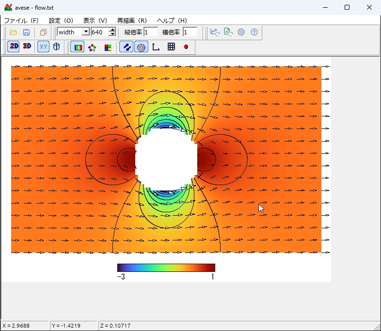
1 2 3 4 5 6 7 8| No. | Area | Buttons |
|---|---|---|
| 1 | File | Open data, save the image, copy to the clipboard |
| 2 | Plot size | Pick width or height as the reference and set the pixel count. Vertical and horizontal scales can be set separately |
| 3 | Actions | Redraw, reload, settings, help |
| 4 | 2D / 3D | Switch between the plan view and the bird's-eye view |
| 5 | Coordinates | XY (Cartesian) or cylindrical |
| 6 | Plot type | Distribution, scatter, panel |
| 7 | Overlays | Vectors, contours, axes, grid, data points |
| 8 | Status bar | X, Y and Z under the mouse (θ and r in cylindrical coordinates). Not shown in the bird's-eye view |
Plot types
Every plot can be switched on from the toolbar or the settings. The images below were made from the sample data with avese. The --set values are what you pass on the command line to get the same plot.
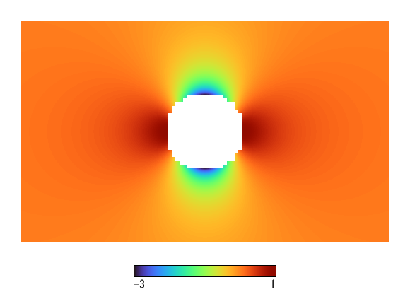
- in the Z column is left blank (white).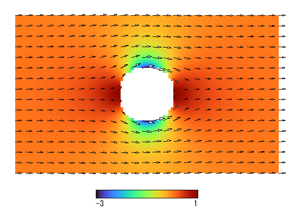
CBvector=1. Thin them out with CBskipx=1 EDstepx=4 and so on.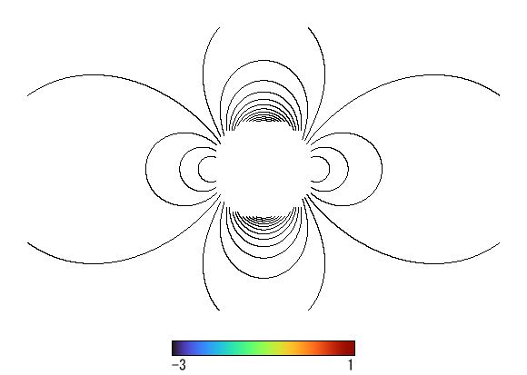
CBtoko=1 SEtoko=16. Hide the distribution with CBgraph=0.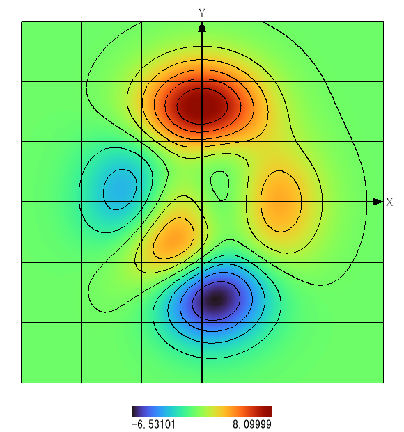
CBaxis=1 CBaxistitle=1 CBgrid=1. Set axis titles with EDXtitle and friends.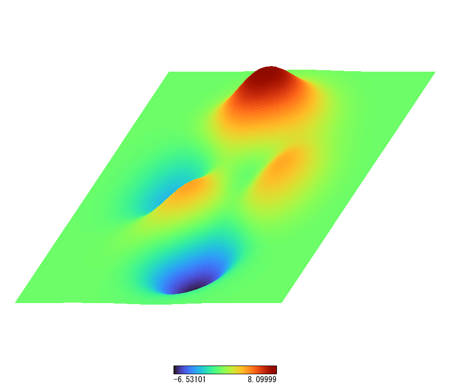
CBland=1 CBsurface=1. Height is SElandheight.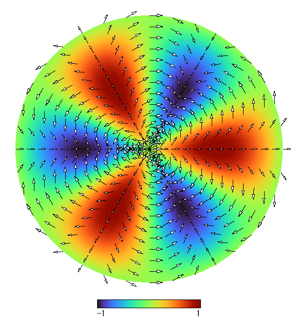
RBcartesian=0 RBcylindrical=1. The X and Y columns are read as θ (degrees) and r.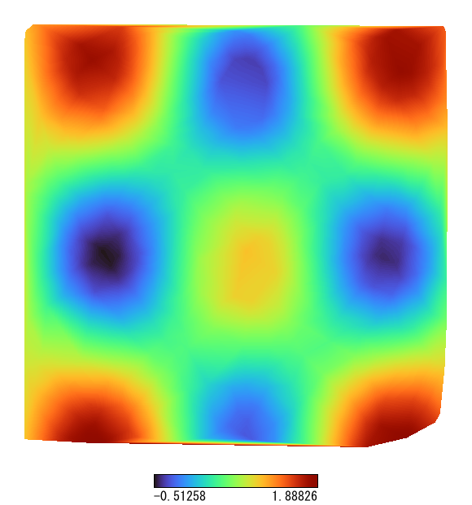
Mesh AutoCreate.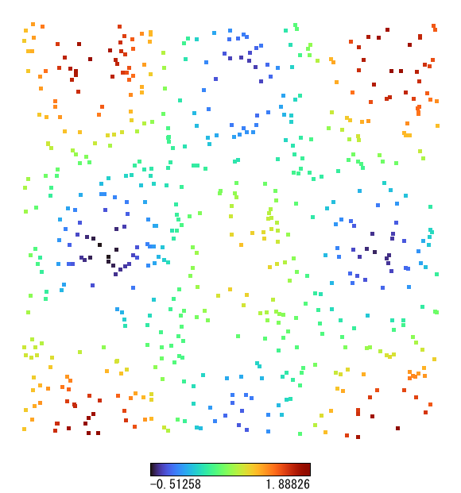
CBscatter=1 SEdotsize=5.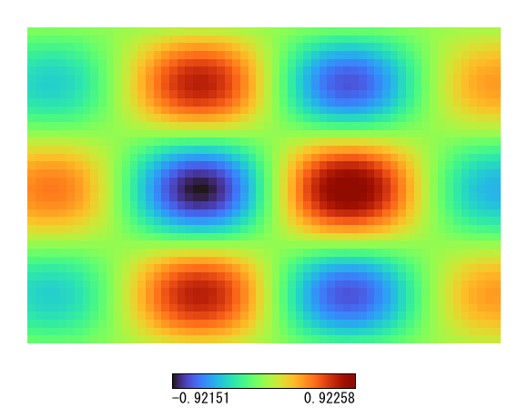
CBpanel=1.Data format
Data is a text file. Both Shift-JIS and UTF-8 are read. Each line is one data point, and values are separated by spaces, tabs or commas.
# X Y Z U V
0 0 1.5 0.2 0.1
1 0 1.8 0.3 0.1
2 0 - 0 0Which column is read as X, Y, Z, U and V can be changed in the I/O tab of the settings. These forms are also available.
| Syntax | Meaning |
|---|---|
- (in the Z position) | Leaves the area around that point blank (white) |
| Blank lines, lines starting with a symbol or letter | Skipped |
Labels x,y,text | Places text at pixel (x, y) of the image, with the origin at the top left. Write it before the numbers. Drawn when Show labels is on |
Mesh AutoCreate | Splits points that are not on a grid into triangles automatically. Write it before the numbers |
A [AVESE.EXE] section | Embeds settings as key=value lines. Effective when "Read settings from the data file" is on |
IncludeINI "name.ini" | Loads another settings file |
In cylindrical coordinates X and Y are θ and r, and U and V are the θ and r components. With the panel type, the file is read as a grid of Z values only, and the first line becomes the top of the image.
Embedding settings
[AVESE.EXE]
SEsize=640
CBvector=1
[DATA]
0 0 1.5 0.2 0.1
1 0 1.8 0.3 0.1Change settings
Open the settings dialog with the Settings button in the toolbar. Press OK to redraw with the new settings.
| Tab | Contents |
|---|---|
| Legend | Show the legend, set the Z range, gradient type, color count, reversal and folding, legend size |
| I/O | Column assignment, lines to skip, panel transposition, spline interpolation, data check |
| Labels | Label font, and the list of labels added on screen |
| Display | Margins, background and foreground colors, fonts for each part |
| Advanced | Save settings on exit, bitmap size limit, image format |
| 3D View | Height, draw as a surface, view angles (η, φ) |
| Distribution | Dot size and shape for scatter plots |
| Vectors | Thinning, length, color, arrowheads, reference value |
| Contours | Number of lines, range, color |
| Coordinates, Grid | Coordinate system, line width, arrows, titles, ticks |
The data range is shown in read-only fields each time data is loaded. A value you type is used only for items whose "Specify" box is checked. Save settings writes avese.ini next to avese.exe, and it is loaded at the next start.
Gradients
Choose from nine gradients. The default is smooth colors-1. On the command line, use CBtype=0 to 8.
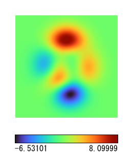
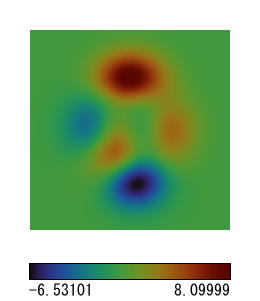
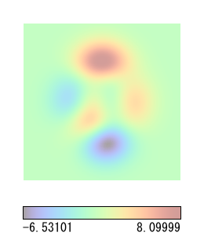
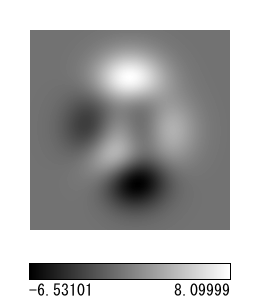
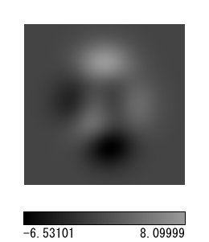
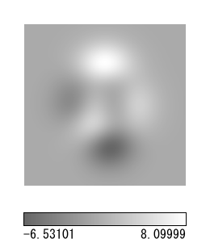
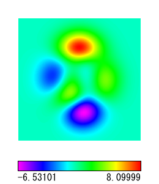
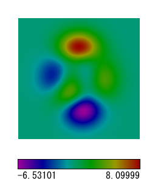
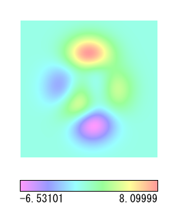
Bird's-eye view
In the 3D View tab of the settings, turn on the bird's-eye view and press OK. Change the viewpoint with the numbers η and φ, or with the sliders next to the preview. The box in the preview moves, so you can check the direction as you adjust.
Saving and output
Choose the format with the file type in Save Image. If you type a name without an extension, the extension of the chosen type is added.
| Format | Notes |
|---|---|
| PNG | Good for the web and documents |
| BMP | 256-color bitmap, uncompressed or RLE-compressed |
| EMF, WMF | Metafiles |
| AVI | Uncompressed video, made with batch processing |
| Clipboard | Sent with Copy. Image Options in the settings chooses bitmap or EMF. Windows only |
Batch and video
Select several files, or drop them together, and the Batch Processing dialog opens. It turns the result of each calculation step into numbered images or a video.
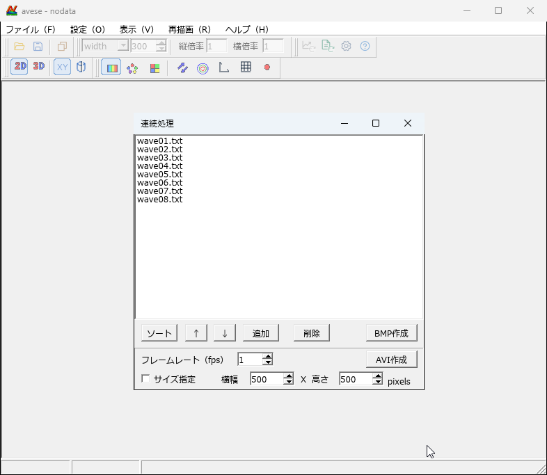
- Arrange the list with Add, Delete, Sort, ↑ and ↓. Sort compares digits as numbers, so frame2 comes before frame10.
- Create BMP saves
filename.bmpfor each file. - Create AVI makes an uncompressed AVI with one frame per file, in list order. Frame Rate sets the frames per second, and Set Size sets the dimensions.
To keep the color range from changing from frame to frame, set the Z minimum and maximum in the Legend tab. The wave video at the top of this page is fixed to −2 to 2.
Command line
Make images and videos without opening a window. This is handy when you add avese to the post-processing of a calculation.
avese data.txt
avese --render data.txt out.png [--rle] [--ini settings.ini] [--set key=value]...
avese --avi out.avi --fps 10 [--frame-size 640x480] [--ini settings.ini] [--set key=value]... data1.txt data2.txt ...The output format follows the extension (.png, .bmp, .emf, .wmf). Add --rle to make a .bmp RLE-compressed. Settings are applied in order: the --ini file first, then --set.
Examples
avese --render flow.txt vector.png --set SEsize=520 --set CBvector=1 --set CBskipx=1 --set CBskipy=1 --set EDstepx=4 --set EDstepy=4
avese --avi wave.avi --fps 12 --frame-size 640x480 --set CBenZmin=1 --set EDenZmin=-2 --set CBenZmax=1 --set EDenZmax=2 wave/wave01.txt wave/wave02.txt wave/wave03.txtCommon keys
| Key | Meaning |
|---|---|
SEsize | Plot size in pixels |
CBgraph, CBscatter, CBpanel | Distribution, scatter, panel (0 or 1) |
CBvector, CBtoko | Vectors, contours (0 or 1) |
CBskipx, CBskipy, EDstepx, EDstepy | Whether to thin out vectors, and the step |
SEtoko | Number of contour lines |
CBaxis, CBgrid, CBpoint, CBlegend | Axes, grid, data points, legend (0 or 1) |
CBland, CBsurface, SElandheight, SEeta, SEphi | Bird's-eye view, surface, height, view angles |
CBtype, CBreverse, CBfold | Gradient type (0 to 8), reversal, folding |
CBenZmin, EDenZmin, CBenZmax, EDenZmax | Fix the Z range |
Download
The latest stable release is v1.0.0, for Windows (x64). Extract the ZIP and run avese.exe. No installation is needed.
Release notes and older versions are on GitHub Releases.
On other OSes, install Rust and build from source. The clipboard works on Windows only.
git clone https://github.com/tetsuji16/avese.git
cd avese
cargo build --releaseSample data
samples.zip (about 1 MB) contains the data behind the plots on this page. All of it is generated from formulas; see make_samples.py for how.
| File | Contents |
|---|---|
flow.txt | Flow around a cylinder in a uniform stream: pressure coefficient and velocity, with the inside of the cylinder as a hole |
peaks.txt | A surface with peaks and valleys |
polar.txt | An example in cylindrical coordinates |
scatter.txt | 600 points that are not on a grid |
panel.txt | Z values laid out as a grid, for the panel type |
wave/ | Two interfering wave sources, 24 frames. An example for batch processing and video |
About
avese is released under the MIT License. Report problems and find the source code on GitHub. The interface language follows your OS setting, Japanese or English.